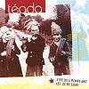

Celtic Lyrics Corner > Artists & Groups > Téada > Give Us A Penny And Let Us Be Gone > Píopa Ainde Mhóir
|  | Píopa Ainde Mhóir |
| Credits : | Traditional; arranged by Téada |
| Appears On : | Give Us A Penny And Let Us Be Gone |
| Language : | Gaeilge (Irish Gaelic) |
Lyrics :
Agus bhí me oíche shaoire i dTír an Fhia is me ag teacht ó cheol
Chruinnigh an ceo i mo thimpeall is níor leir dom aon sórt
Thabharfainn lán a' Bhíobla gur turnóg a bhí ar an gcaolach
Leis an deatach a bhí os mo chionnsa ag píopa Ainde Mhóir
Ó is mo bheannacht le gaoth a't síos a Ainde Mhóir
Do mhac go dtige in inmhe is lao go raibh ag do bhó
Mar is tusa a rinne an píopa ba fairsinge a bhí sa tír seo
Is ní chaithfear ráithe an gheimhridh go ndéanfaidh mé duit spórt
Agus siúd í an bhean a líon é is ní le tuí é ná le móin
Chuir sí naoi bpunt síos ann 'gus píosa den duilleog
Cailleachaí na tíre agus chruinndís ina thimpeall
Agus gheobhadh ar fad fuílleach i bpíopa Ainde Mhóir
Is ag gabháil go hInis Ní dúinn le lucht caorach agus bó
Maidin gharbh gheimhridh is é gaofarach go leor
'Gabháil trí Thóin Uí Fhlionn dúinn sé thosaigh an bád ag líonadh
Is nárbh ait an galún taosctha 'rinne píopa ainde Mhóir?
Is bhí mé amuigh ar aonach is i gCill Bhríde is mé ag óg
Bhí comhluadar deas i mo thimpeall is riar mhaith ag ceol
Bhí beirt isteach as Luimneach ann 'gus an stil mhór acu líonta
Séard a d'fhiafraigh seanbhean aosta "B'in é píopa Ainde Mhóir?"